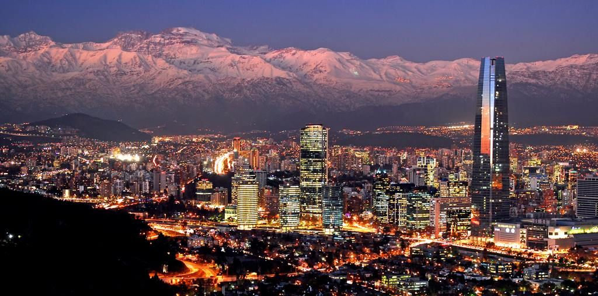

Chile
Dados gerais
| Capital | Santiago |
| População | 19 milhões |
| Área | 756 mil km² |
| Idioma oficial | Espanhol |
| Moeda | Peso chileno |
| Forma de governo | República presidencialista |
O Chile é um país de formato singular: estreito e comprido, estende-se por mais de 4.200 km de norte a sul ao longo da costa do Pacífico Sul, sem jamais ultrapassar 180 km de largura. Essa geometria única cria uma variedade climática extraordinária, do árido deserto do Atacama ao norte até os campos de gelo patagônicos no extremo sul.

Cultura e sociedade
A cultura chilena é resultado da mistura entre a herança indígena, especialmente dos povos Mapuche, e a colonização espanhola. A literatura chilena tem destaque mundial com os prêmios Nobel Pablo Neruda e Gabriela Mistral. A culinária valoriza os frutos do mar — o ceviche, os mariscos e o congrio são pratos nacionais emblemáticos.
O vinho chileno conquistou reconhecimento internacional: os vales de Colchagua, Maipo e Casablanca produzem castas como Carménère, Cabernet Sauvignon e Sauvignon Blanc que figuram entre os melhores do mundo.
Turismo
O deserto do Atacama, o mais árido do mundo, oferece paisagens lunares, gêiseres e salares de rara beleza. A Patagônia chilena, com o Parque Nacional Torres del Paine, é destino obrigatório para o trekking de alto nível. Santiago e o arquipélago de Chiloé, com suas igrejas de madeira patrimônio UNESCO, completam o roteiro.